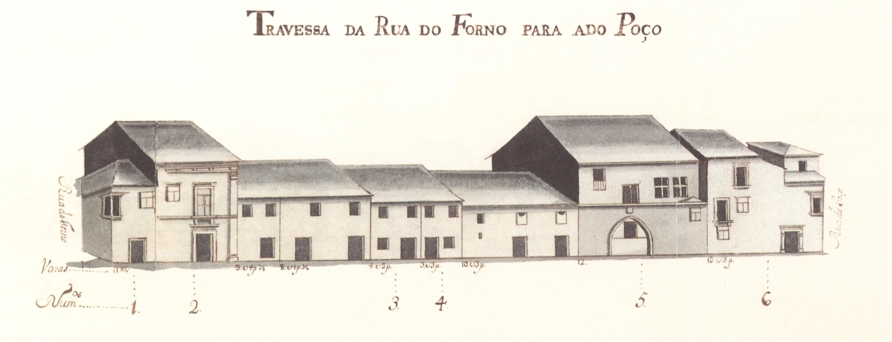

Legenda:Travessa Da Rua Do Forno Para A Do Poço - vista norte.
Legenda:Travessa Da Rua Do Forno Para A Do Poço - vista sul.

Legenda:Rua Atual

Legenda:Rua Atual
Número: 1, Enfiteuta: Dr. Francisco Gomes do Couto,Foro: 600 reis e 8 galinhas, Descrição: A casa n° 1 confronta, do nascente, com a Rua do Forno. Fazem parte deste prazo os n° 15. 16, 17, 18 e 19, da Rua do Forno ou dos Cegos. A casa n° 16 é foreira ao chantrado e paga de censo ao cabido 2 maravedis, ou seja. 54 reis.
Número: 2, Enfiteuta: Não disponível,Foro: 108 reis (de censo), Descrição: A casa n° 1 confronta, do nascente, com a Rua do Forno. Fazem parte deste prazo os n° 15. 16, 17, 18 e 19, da Rua do Forno ou dos Cegos. A casa n° 16 é foreira ao chantrado e paga de censo ao cabido 2 maravedis, ou seja. 54 reis.
Número: 3, Enfiteuta: Pedro da Cunha Sottomaior,Foro: 1050 reis e 4 galinhas
, Descrição: A casa n° 3 confronta, do sul, com a Rua dos Palhais e,foi unida ao n° 4 em 1622. A casa n.º 4 foi deixada ao cabido pelo arcediago de Vermoim. Francisco Fernandes, com encargo de um aniversário de três lições.
Número: 4, Enfiteuta: Pedro da Cunha Sottomaior,Foro: 1050 reis e 4 galinhas
, Descrição: A casa n° 3 confronta, do sul, com a Rua dos Palhais e,foi unida ao n° 4 em 1622. A casa n.º 4 foi deixada ao cabido pelo arcediago de Vermoim. Francisco Fernandes, com encargo de um aniversário de três lições.
Número: 5, Enfiteuta: Não disponível,Foro: 54 reis (de censo), Descrição: É foreira ao morgado de Real. O censo é pago por Lopo de Barros de Almeida.
Número: 6, Enfiteuta: Padre António de Sousa e Alvim,Foro: 400 reis e 1 galinha , Descrição: Situa-se na esquina da Rua do Poço e
confronta, do sul, com a casa n° 17 da dita rua. Pertence a este prazo o n.º 16, da Rua de Santa Maria ou do Poço.
Número: 7, Enfiteuta: Os herdeiros de João do Vale Campos,Foro: 1200 reis e 8 galinhas, Descrição: Ao prazo n.º 7 foram unidos, em 1561, dois ênxidos que se separaram dos n.º 13 e 14 da Rua do Poço e, em 1677. as casas dos referidos n.ºs.
Número: 8, Enfiteuta: Não disponível,Foro: Não disponível, Descrição: Corresponde ao n.° 2 da Rua Pequena.
Número: 9, Enfiteuta: Os herdeiros de Henrique de Sousa e Alvim,Foro: 330 reis e 2 galinhas
, Descrição: Confronta, do nascente, com casa foreira à cororaria.
Número: 10, Enfiteuta: Não disponível,Foro: Não disponível, Descrição: Corresponde ao n.º 20 da Rua do Forno, para onde tem a frontaria e serventia principais. Confronta, do poente, com casa foreira à cororaria.